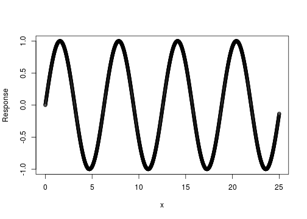
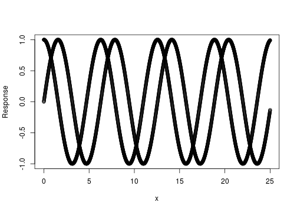
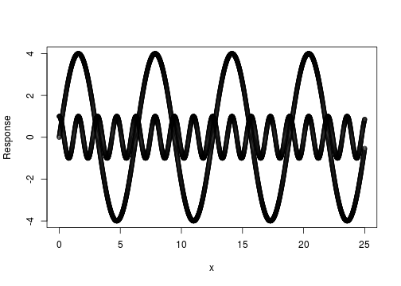
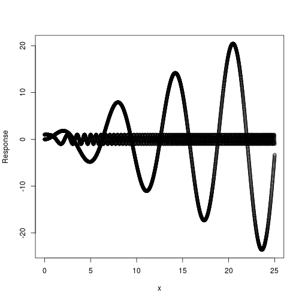

x <- seq(0, 25, 0.01)
plot(x, sin(x), type = "p", xlab = "x", ylab = "Response")

x <- seq(0, 25, 0.01)
plot(c(x, x), c(sin(x), cos(x)), type = "p", xlab = "x", ylab = "Response")

x <- seq(0, 25, 0.01)
plot(c(x, x), c(4 * sin(x), cos(4 * x)), type = "p", xlab = "x", ylab = "Response")

x <- seq(0, 25, 0.01)
plot(c(x, x), c(x * sin(x), cos(x^2)), type = "p", xlab = "x", ylab = "Response")
